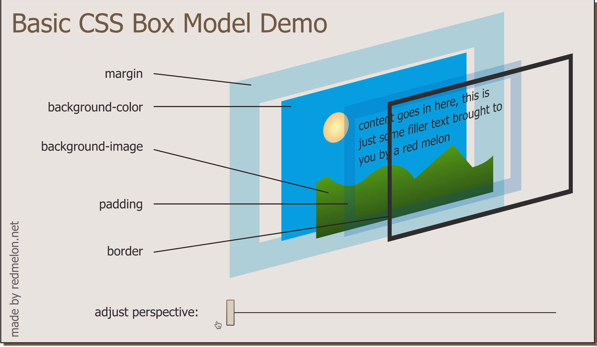

scroll
text in h3
TextDecoration Css Display property
paragraphs are bolock elements and take whole width
span, img, anchor tags are common inline elements and take only as much required. we cannot change width of inline elements but we can change width of block elements. By setting display style property to inline they let next elements to follow them on the same line. ('display': 'inline'). setting display: 'inline-block' makes element have both properties. i.e we can set their width and also treat them as inline elements.
using span: spanned part non spanned part
Hiding visibilityThis word is displayed
This is not displayed. "display": "none"
This is not displayed "visibility":"hidden"
setting display to none removes the element from being displayed. while visibility set to hidden just hides with a visible empty space
Css positioning1) order of elements come from the html code.
2) childern sit on parents
this is a child para that sits on the top of a div parent element whose background is yellow. while this word written in a span element sits on its parent p element
3) positioning elements: elements are usually positioned by the default layout. These have position: static. By setting it to relative it can be moved relative to itself. moving an element by relative positioning doesnt move or effect other elements. The element that is moved through relative positioning moves by leaving empty space at its original position. "top": 20px in relative positioning sets 20px top margin from the current position.
The below images position is set to relative and is positioned 30px from left
we can set properties like top, bottom, left, right when position: relative
Absolute positioning4) Through absolute positioning we can change the coordinates(top, left, botom, right) relative to its parent element. Unlike relative positioning the original gost position is deleted. This can affect the layout of other elements. Like the deleted space in the layout can be taken by other surrounding elements
this is a parent div and the below image is positioned with "absolute" and is moved relative to its div parent 300px with left = 300px
........
In Relative positioning the element is moved wrt where it should have been. In Absolute positioning the element is moved wrt its parent
sample paragraph
we can have only 1 id as a selector but we can have multiple classes to one selector as this one. This paragraph has two classes 'paraClassGreen' and 'demo'. The above pragraph has only one cass paraClassGreen while this paragraph has both paraClassGreen and demo. Classes and id's are more specific selectors than tag selectors. Tag selectors properties can be over ridden by class or id selectors. Id's are unique throughout the html
psuedoClassHover over me
using :hover in styles.css for h2 element

this image is also the favicon. Compare it with the below image. in the below image border width is set as border-width: 0px 10px 20px 30px
The below image is loaded from ./css/images directory using relative path. its size is increased by setting width to 30%
This is an example para with changed background background-color: #e5fbb8
Alligning text to center To align text to center set text-align: center
Also centering element can also be done by setting margin: "auto"
para1
para2
para3
Decorated text with underline
setting width to 100% makes an element to occupy the whole width in the layout
border: solid shows a 3px border around the element
change the border width with border-width: 10px
This is the content inside the 10px solid boder colured green and 20px padded wrt to border. The bg-colour of the div is light green. The margin is 50px